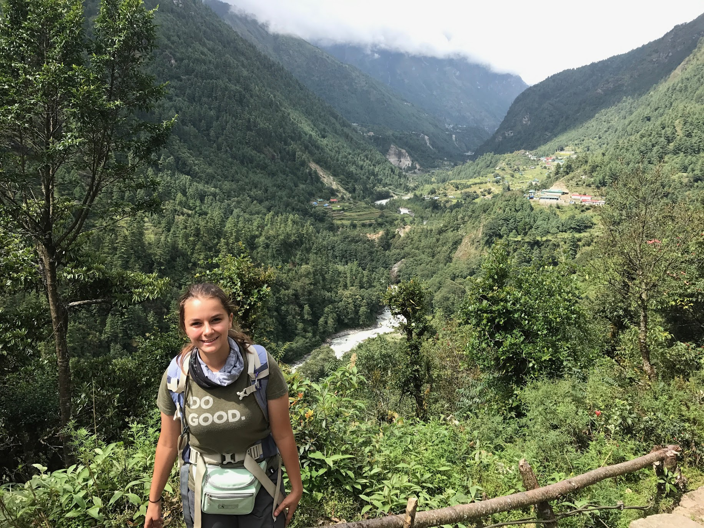

Traveling as an indivudual or in groups may seem overwhelming and beyond any budget.
We're here to show you that travel is possible and affordable!
After hours of searching flights, reading different books
and artichles, we have found the best resources to help you achieve your travel goals!
Read more about how I got started below —>
Travel has become remarkably affordable in the past decade. With the growth of more and more budget
friendly airlines, we’ve seen a huge travel boom. There’s a lot more competitive pricing when it comes
to finding tickets, and if you’re willing to be flexible about when and where you go, there’s always an
affordable option!
If you have a specific destination in mind, waiting for the right opportunity to arise can be the
biggest game changer in how much you spend on flights. Another aspect to look at is not only the cost of
travel, but how much you’ll spend on lodging and food. This has made travel a lot easier and a lot more
family friendly.
Sometimes you will spend more on lodging than on the actual ticket getting to your destination. These
are all good things to keep in mind when planning your first trip.
Past experiences
Visiting the Boudha Stupa in Kathmandu, Nepal. The Stupa is said to house the remains of Kassapa Buhda
and is an iconic landmark to the country. - 2015

On the trail to Everest Base Camp - We started out in a lush, green, and humid climate, but as we got
higher in elevation it turned to ice, rock, and rain.
At the age of 15 I had never even left my home state of Utah, I hadn’t even traveled more than 5 hours
away from my house! Travel seemed like a completely foreign concept and something that only a select few
had the opportunity to experience.
In 2015 that perspective drastically changed when my family had the opportunity to visit Nepal. We
decided to jump on the chance and take the trip. At first it was a very scary experience, I hadn’t even
been to another state before, let alone a 3rd world country in Asia.
Traveling to Nepal for the first time allowed me to experience what it was like to travel
internationally. As well as HOW to travel internationally.
We had an amazing trip full of wonderful experiences. After that, I haven’t been able to stop traveling!
Everest Base Camp - 2017
In September of 2017 we decided to go back to Nepal to hike to Everest Base camp. The trek was 2 weeks
to base camp, and 1 week home.
While visiting the country we got to stay in the capital city Kathmandu, where we got to experience
different foods, languages, religions, and met so many different people.
This trek not only included your typical air travel and taxi rides, but traveling on foot as well.
Ever since then I’ve been looking into different flights, deals, and countries to visit. There has been
a lot of trial and error along the way, but with that came a lot of learning.
Paris - 2021
In the summer of 2021 I decided to take a trip to Paris. This was just after the closures from Covid-19
were coming to an end, and it was a great time to travel!
I don’t think I’d ever been to such a historically rich and beautiful city before, I absolutely fell in
love (especially with the food)
I got to spend 3 days exploring the Louvre. Seeing the Mona Lisa and other works of art opened my eyes
to preserving the art that we have today.